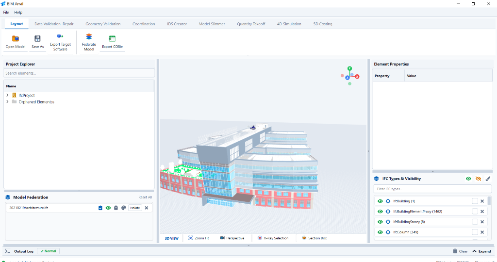

Next-Gen OpenBIM & VDC Desktop Platform
The Ultimate OpenBIM Powerhouse for Validation, 4D/5D & Auto-Repair
Instantly audit IFC models, 1-click auto-repair geometry & missing parameters, detect void-aware clashes, extract accurate QTO quantities, and simulate 4D/5D construction timelines in one ultra-fast, 100% offline Windows desktop application.
Genuine Windows Desktop App

9 CAD Workspace Ribbons
Live Model Federation
IFC Type Colorizer & Properties